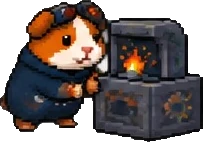
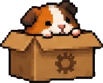

What a Minecraft mod port costs, and why
Almost every quote you will get for a mod port is a number with no reasoning attached, which makes it impossible to tell a fair one from a guess. Four things actually set the price, and only one of them has anything to do with how big the mod is.
This is the model I quote from, written out in full. You can use it to sanity check my price, or anyone else's.
The thing that does not drive the price: file count
Moving registrations, item classes and recipes across is the bulk of the changed lines in most ports. It is also the safest part of the job, because the compiler refuses to build until you have finished it. Work the compiler catches is cheap work.
What costs money is the work the compiler cannot see: behaviour that silently changed between versions, a mixin that still applies but now targets the wrong thing, a registry that moved phase. So a quote built by counting files is measuring the safe sixty per cent and ignoring the risky forty.
1. Version walls, the dominant factor
Version distance is not linear. Two versions apart can be a recompile, or it can be a rewrite, depending entirely on whether the gap contains one of four structural breaks. If a port crosses one of these, the wall sets the floor no matter how small the mod is.
| Wall | Where | What it does to the code |
|---|---|---|
| The Flattening | 1.12 to 1.13 | Numeric IDs and metadata are gone, so every block variant becomes its own block. LWJGL 2 to 3, assets restructured into data. Effectively a rewrite. |
| Worldgen to datapack | crossing 1.18 | Biomes, dimensions and structures move to JSON and codecs. Brutal for a worldgen mod, barely noticeable for a content mod. |
| Networking and config phase | crossing 1.20.2 | SimpleChannel becomes CustomPacketPayload, plus a new connection phase. This is also the line where Forge and NeoForge diverge. |
| Data components | crossing 1.20.5 and 1.21 | Item NBT becomes DataComponentMap, with StreamCodec and Java 21. Anything that touches ItemStack data gets rewritten. |
Why 1.20.1 is the cheap destination. It is the last Forge long term support version, it sits underneath every recent wall, and it still carries an enormous modpack base. A port to 1.20.1 from a neighbouring version crosses nothing, which is why it is the cheapest work on the list and the version I specialise in.
Some jumps that look large are trivial: 1.19.2 to 1.20.1, 1.20 to 1.20.1, and 1.20.2 to 1.20.4 are mostly recompiles. Some jumps that look small are not: 1.20.4 to 1.21 crosses data components.
2. Loader direction, which is not symmetric
People tend to price a loader change as one flat surcharge in either direction. That is wrong by an order of magnitude, because the six possible directions are nothing like each other.
| Direction | Difficulty | Why |
|---|---|---|
| Fabric to Forge | Hardest | Different events and registries, different mappings, and a weaker mixin surface, so mixins get re-derived and Fabric API calls get reimplemented. Close to a rewrite. |
| NeoForge to Fabric | Very hard | Same cross family wall, and nothing on the Fabric side smooths it over. |
| Forge to Fabric | Hard | Cross family rewrite, but onto a lighter target. |
| Fabric to NeoForge | Hard | Same shape as the first row, with better tooling. |
| Forge to NeoForge | Easy | Same forked codebase. Mostly a rename. |
| NeoForge to Forge | Easiest | The reverse of that rename. |
If you have been quoted the same premium for Forge to NeoForge as for Fabric to Forge, one of those two numbers is wrong. I wrote a separate piece on what actually breaks in a Fabric to Forge port if you want to see where the hours go.
3. What the mod touches
Effort scales by subsystem crossed with wall, not by size. The same wall lands very differently depending on what the mod does:
- Items, blocks, recipes, creative tabs. Cheap almost everywhere, except across data components.
- Worldgen, biomes, structures. Cheap now, brutal across 1.18.
- Entities with custom rendering or animation. Mid, and it is where silent breakage lives. Animation libraries have initialisation order rules that produce no error when you get them wrong.
- Anything storing data on an
ItemStack. Cheap below 1.20.5, expensive above it. - Heavy networking. Cheap below 1.20.2, expensive above it.
This is why I ask what the mod does before I quote, rather than just how many files it has.
4. Licence, which decides whether the job exists at all
Before any of the above matters, the mod has to be legally portable. I check the LICENSE file in the source repository, not the licence field on the mod page, because the two disagree more often than you would expect and only one of them is the actual grant.
- Permissive licences such as MIT and Apache mean a public port with credit to the original author is fine.
- Copyleft licences such as GPL and LGPL allow the port, but it inherits the same licence, so the ported source has to stay open. That is a decision you should make on purpose, not discover afterwards.
- No licence file at all means all rights reserved by default. It is not a grey area and it is not an oversight you can rely on. That job needs written permission from the author first.
- All rights reserved with permission is billable, delivered privately to you, and priced higher, because it cannot be reused and it carries the paperwork.
I would rather lose a job at this step than hand you something that gets taken down later.
The actual numbers
These are the figures the estimator on the front page runs on, so the two always agree. Everything stacks additively rather than as a chain of percentages, which is what makes it checkable.
| Component | Small | Medium | Large |
|---|---|---|---|
| Forge 1.20.1 port, base | $35 | $65 | $120 |
| Compatibility patch between two mods | $25 | $60 | $130 |
| Maintenance on an existing port | $25 | $50 | $95 |
| Performance work | $45 | $85 | $150 |
| Added on top | Amount |
|---|---|
| No wall crossed | $0 |
| Moderate wall, crossing 1.20.2 networking | +$25 |
| Hard wall, crossing 1.21 data components | +$60 |
| Brutal wall, the Flattening or worldgen across 1.18 | +$110 |
| Forge to NeoForge in either direction | +$20 |
| Fabric to Forge | +$250 |
| Private delivery, all rights reserved source | ×1.35 |
| Priority in the queue | ×1.25 |
| Top of the queue | ×1.5 |
Minimum of $20 on any job, including the one line fixes, because every job carries the same intake, licence check, build and boot test regardless of how small the change is.
The estimate is a range, and the range is honest about what it is. It is built from the mod as you describe it. The fixed price comes in writing after I have actually opened the source, and it is the number you pay. If what I find makes the job bigger than described, you get told before any work starts, not after.
A real job, added up
Mindful Eating by camcam_burger, a food variety mod. It ran on Forge 1.20.1 and had to end up on NeoForge 1.21.1. What that actually involved:
- The per player data system rebuilt on native data attachments, which also let the Blueprint dependency go, at the creator's own suggestion.
- The food stat tweaks moved onto the 1.21 component system, because the old approach does not exist there any more.
- A HUD, so client and server behaviour both had to be checked rather than assumed.
Priced off the tables above, nothing hidden:
| Component | Why | Amount |
|---|---|---|
| Base, medium mod | mechanics plus a GUI, not just items | $65 |
| Hard wall | crosses 1.21 data components | +$60 |
| Loader change | Forge to NeoForge | +$20 |
| Licence multiplier | LGPL, publishable, so none applies | ×1 |
| Total | the arithmetic is additive on purpose, so you can check it | $145 |
Being straight about this one. That is where the job lands on my own table, not an invoice. I did this port for the mod's creator and handed it back to him for his official page, so nobody paid me for it. I am using it because it is a job I can describe end to end with his name on it, and a worked example you cannot verify is worth nothing.
What is not in the price
- New artwork. The mod's original assets travel with the port at no extra cost. Textures or models drawn from scratch are quoted separately, because that is a different craft.
- Features that did not exist in the original. A port makes the mod run on the new target. Adding to it is commission work with its own quote.
- Hosting or publishing on your behalf. Public listings are yours to control, unless you ask me to handle it.
- Support past the correction window. Corrections against the written scope are included for thirty days. After that it is maintenance, and maintenance has its own line in the table above.
When you should not pay me at all
Three cases where this costs you nothing, and I would rather say so here than after you have opened a ticket.
- The mod already runs through a bridge. Sinytra Connector runs Fabric mods on Forge and NeoForge, including 1.20.1, and it is free. Try it first. I wrote up when it works and when it does not.
- The mod is built on Architectury. If the source tree already has a
forge/srcdirectory, most of the work you would be paying for is done. That is usually a version bump, not a port, and often something you can finish yourself in an evening. - You want to learn how. Everything I know about the failures that produce no error is written down for free: what breaks in a Fabric to Forge port and the crash no compiler can catch. If you would rather spend a weekend than money, spend the weekend.
What you are actually buying when you do pay is not the typing. It is somebody who has already hit the failures that build clean and break silently, and who checks for them before the jar leaves.
How to get a number you can trust
Whoever you hire, ask them three questions. They are cheap to ask and the answers separate people who have done this from people who are about to find out.
- Which walls does this port cross? If the answer is not one of the four above, they have not looked at the version pair.
- What is the licence, and where did you read it? The correct answer names the
LICENSEfile in the repository. - How will you know it works? Compiling is not evidence. The answer should involve the mod loaded in an actual game.
Want the number for your mod? The estimator asks for the version pair, the loader direction, the rough size and the licence, and gives you a range immediately. No email required to see it.